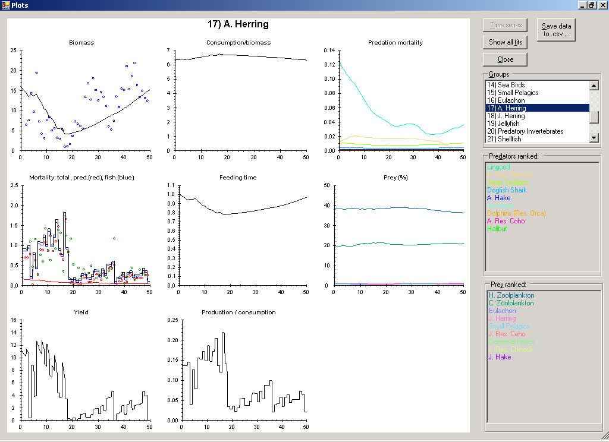
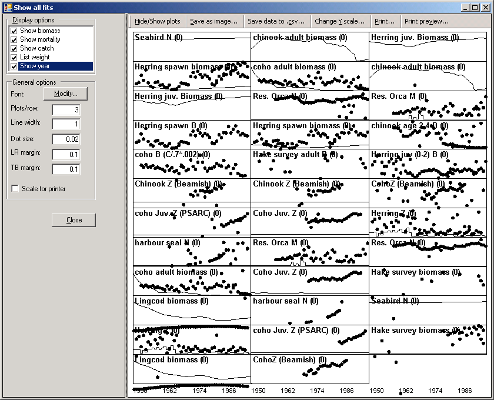

The Plots button on the Biomass form opens a form displaying a series of plots of the results of the Ecosim simulations (see Figure 9.3). Select the group to be displayed by clicking on its name in the Groups window on the right of the form. Plots will be displayed showing time series of predicted biomass, consumption/biomass, predation mortality, total mortality, feeding time, percentage of prey, yield and production/consumption.
If you have loaded and applied time series of historical data using the Time series form, dots will appear on the Biomass plot showing the observed biomass time series, while dots on the Yield plot will show observed catches (t · km-2 · year-1). Ecosim’s predicted biomasses and catches are shown as lines.
Displays values of currently-loaded time series for the selected group.
Saves eight csv-files, one for each of the displayed plots, storing the data for all groups.
Opens the Display all fits form, which displays all fits to time series in a form suitable for printing (Figure 9.4). Customize the plot and outputs using the following settings on the form:
Use Display options and Show/hide groups to select which plots to display (by data type and by group, respectively).
Use General options (on the left-hand side of the form) to set font, number of plots per row, dot size, line size and margins.
Change Y scale allows you to set the maximum Y-value for each individual plot.
Use Save as image to save the plots as a bitmap (.bmp) file.
Print the plots directly using Print… and Print preview….
Export the data to three csv files showing results for biomasses, catches and mortality using Save data to .csv.
Closes the Plots form.

Figure 9.3.

Figure 9.4.